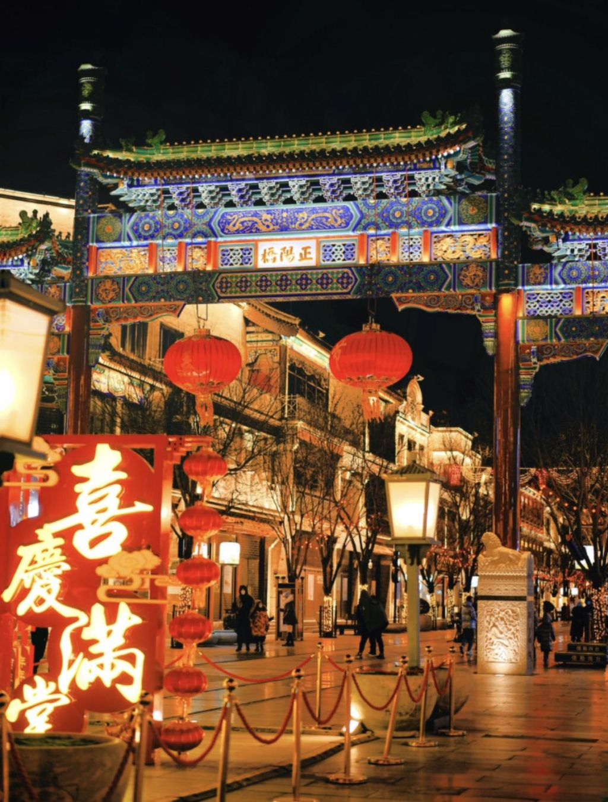
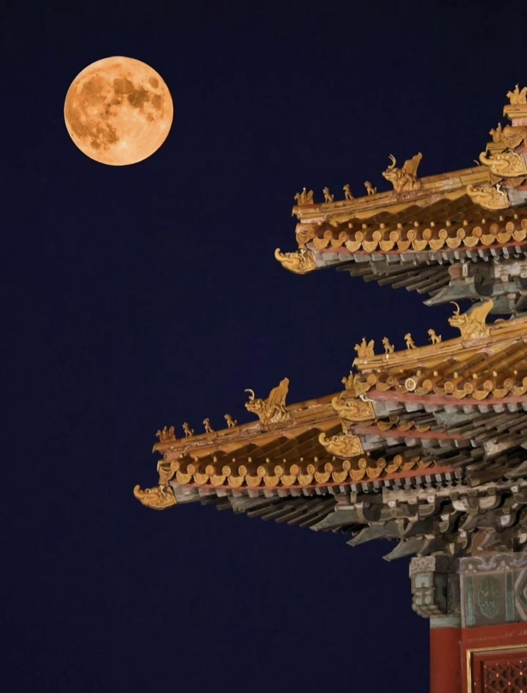
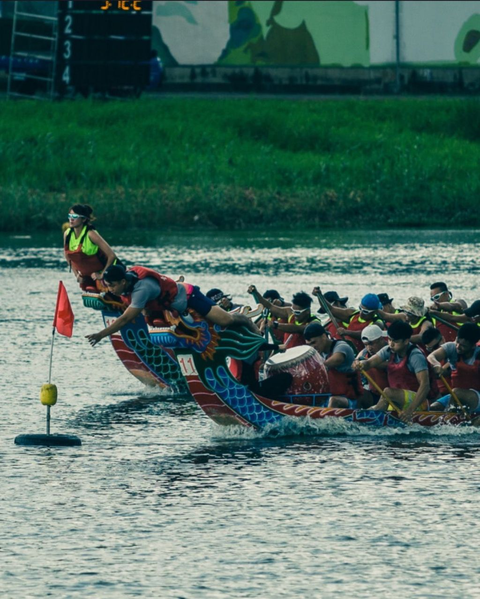
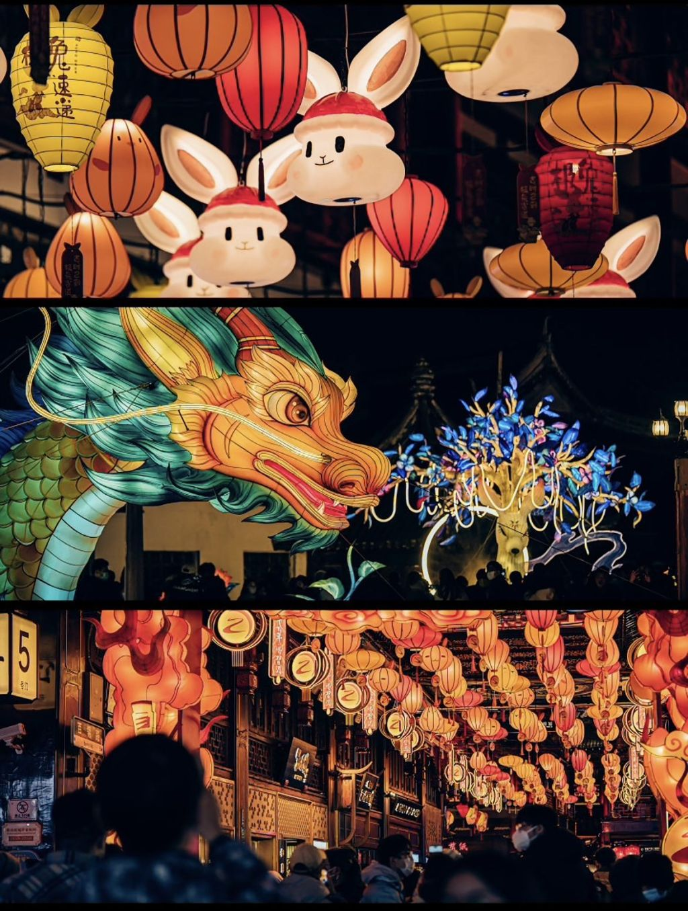

Traditions
Les fêtes traditionnelles chinoises portent un sens culturel profond et un héritage historique.
La plus célèbre est le Nouvel An chinois. Ils ne sont pas seulement des moments de réunion familiale
et amicale, mais aussi des moyens importants de transmettre et d'expérimenter la culture chinoise.
|
 |
Le Nouvel An Chinois-
Le Nouvel An Chinois, également connu sous le nom de Fête du Printemps, est le
festival le plus important en Chine. Il célèbre le début de la nouvelle année
selon le calendrier lunaire. Les familles se réunissent pour un repas festif,
des feux d'artifice illuminent le ciel et les enfants reçoivent des enveloppes
rouges contenant de l'argent en guise de bonne fortune. C'est une période de
réjouissances et de traditions ancestrales.
|
|
 |
La Fête de la Mi-Automne-
La Fête de la Mi-Automne, ou Festival de la Lune, est célébrée lors de la pleine
lune du 15e jour du 8e mois lunaire. C'est le moment de se rassembler en famille,
d'admirer la lune pleine et de déguster des gâteaux de lune, qui sont des
pâtisseries rondes symbolisant la réunion et la plénitude.
|
|
 |
La Fête du Bateau-Dragon-
La Fête du Bateau-Dragon est célébrée le cinquième jour du cinquième mois lunaire.
Elle commémore le poète patriotique Qu Yuan. Les gens mangent des zongzi, des
paquets de riz gluant enveloppés dans des feuilles de bambou, et participent à des
courses de bateaux-dragons, en mémoire de l'effort pour sauver Qu Yuan de la noyade.
|
|
 |
La Fête des Lanternes-
La Fête des Lanternes, ou Yuanxiao Jie en chinois, est célébrée le quinzième jour du
premier mois lunaire, marquant la fin des festivités du Nouvel An chinois. Cette
fête, qui remonte à plus de 2000 ans, est une occasion pour admirer la lune, allumer
des lanternes et résoudre des devinettes écrites sur celles-ci. C'est un moment de
réunion familiale et de bonheur partagé. Les gens mangent aussi des boulettes de riz
gluant appelées "yuanxiao" ou "tangyuan", symbolisant l'unité familiale et la
prospérité. Les rues se parent de lanternes colorées, créant une atmosphère festive
et joyeuse. La Fête des Lanternes est donc non seulement une célébration de l'année
nouvelle mais aussi un hommage à la culture et aux traditions ancestrales chinoises.
|